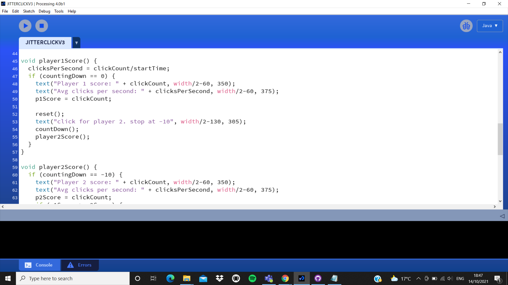
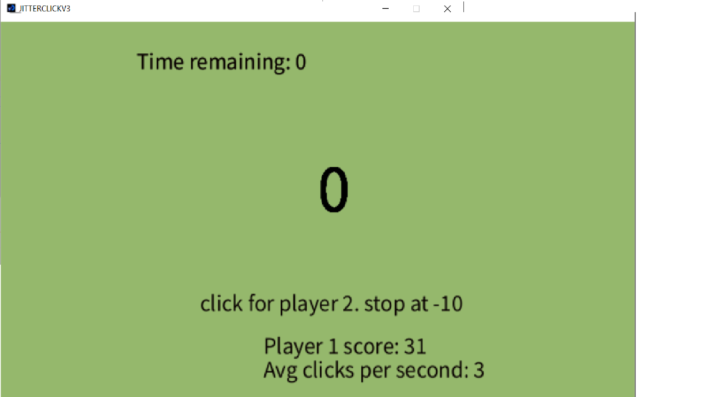
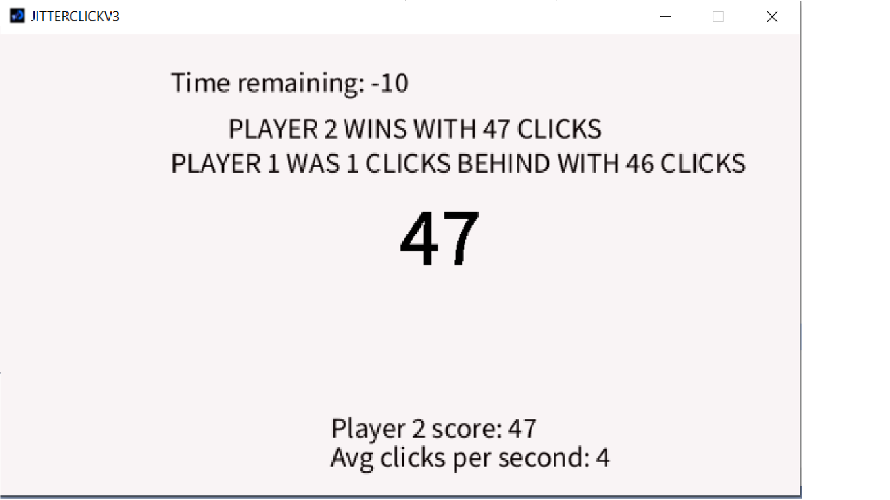

Jamie-Lee GordonI have an average amount of experience with programming, where i have used python during my A-levels and GCSE's, I've created simple projects and I've produced a diary application for my A level coursework. I have much love for the subject of computer science where people have helped me along the way such as an amazing teacher i had called Mr Eason, who helped me take my understanding to another level. I want to pursue a career in the technology industry, either down the creative route or software engineering but to hopefully run my own business someday. |
||
|
|
||
Bootcamp 2021: Jitter ClickI have produced a 'Jitter click' game using processing as my bootcamp project. I have tackled a few diffrent topics such as the use of interaction where I have used the clicking of the mouse to allow the user to play the game, where they have to click the mouse as many times as possible within the time limit. I have also used an abundance of methods such as having a player 1 and 2 method and methods that calculate their scores and accumulates a winner. RULES: - Player 1 has 10 seconds to click the mouse as many times as possible. - A score is displayed and the average amount of clicks per second is calculated and displayed. - Player 2 will then, also, have 10 seconds to click the mouse as many times as possible. - A winner is selected by whoever clicked the mouse the most within the given time. Check out the code on Github: https://github.com/jamie274/JitterClick_bootcamp | Click for video demonstration | |
|    | ||